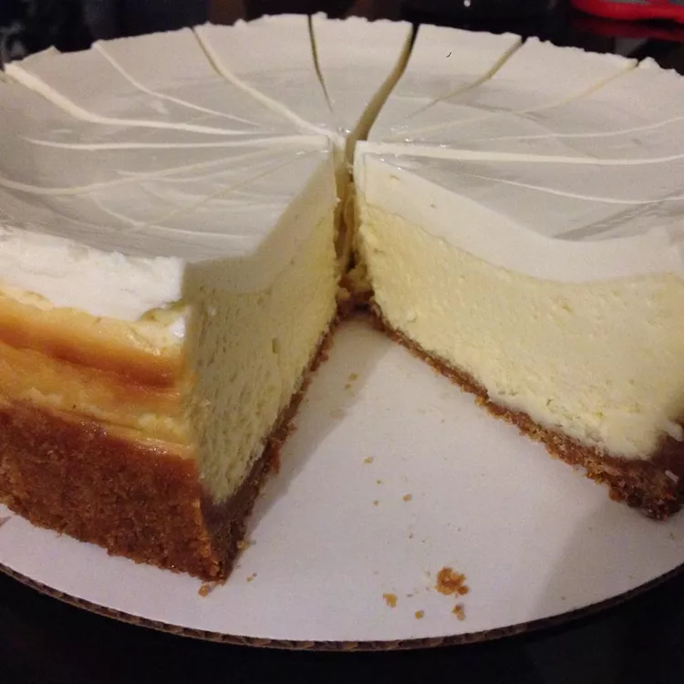

New York Cheesecake

This New York cheesecake recipe with sour cream is foolproof, easy, and super delicious.
Ingredients
- Graham Crust:
- 1 1/2 cups graham cracker crumbs
- 1/3 cup butter, melted
- 1/4 cup white sugar
- Cheesecake:
- 3 packages of 227 gr cream cheese, room temperature
- 1 cup white sugar
- 4 large eggs, room temperature
- 1 tbsp vanilla extract
- 1 tsp cream of tartar
- Sour Cream Topping:
- 1 pint sour cream
- 1/2 cup white sugar
- 1 tsp vanilla extract
Steps
- Preheat the oven to 180°C
-
Make crust: Mix together graham crumbs, melted butter, and sugar in a medium bowl until evenly moistened. Press into the bottom and 1 cm up the
sides of a 22 cm springform pan. Set aside.
-
Make cheesecake: Mix together cream cheese and sugar in a large bowl with an electric mixer until smooth. Blend in eggs, vanilla, and cream of tartar.
Pour over crust in the pan.
- Bake in the preheated oven until the center is set, about 50 minutes. Allow to cool on the counter for 5 minutes.
- While cheesecake is cooling, make topping: Mix together sour cream, sugar, and vanilla in a medium bowl until smooth.
- Pour topping over cheesecake, starting from the sides of the pan and working your way to the center.
-
Return cheesecake to the oven until topping is set, about 5 minutes. Allow to cool in the pan to room temperature. Chill in the refrigerator for at
least 6 hours before serving.